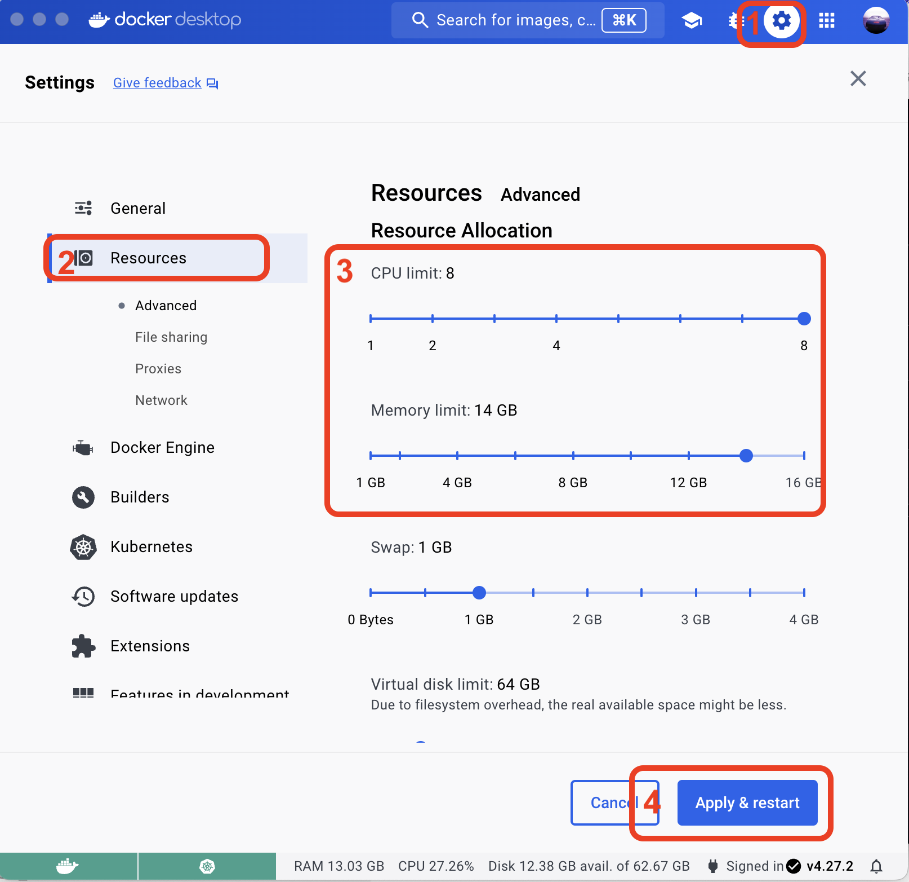

Setup kubernetes
Magasin components are designed for installation within Kubernetes clusters. Major cloud providers offer the ability to set up these clusters, but for exploration and testing, you can create one on your desktop.
If you already have a Kubernetes cluster, you may skip this step.
For setting up a Magasin instance in a local cluster on a desktop, it is advisable to have a minimum of 32 GB of RAM.
1 Setup a local cluster
1.1 Option 1: Local cluster using Docker-desktop
In case you do not have a Kubernetes cluster, another easy way to set it up is through Docker Desktop. It is available for:
Once installed. In Settings / Kubernetes , enable Kubernetes. It will automatically install

Lastly, on a command line, create the new cluster and use it:
kubectl config set-context magasin --namespace default --cluster docker-desktop --user=docker-desktop
kubectl config use-context magasinTo ensure that the kubernetes cluster is the correct one check if the name corresponds to the
kubectl get nodes
NAME STATUS ROLES AGE VERSION
docker-desktop Ready control-plane 48m v1.28.2kubectl get namespaces
NAME STATUS AGE
default Active 49m
kube-node-lease Active 49m
kube-public Active 49m
kube-system Active 49mMore information:
- https://docs.docker.com/desktop/kubernetes/
- https://birthday.play-with-docker.com/kubernetes-docker-desktop/
1.1.1 Docker-Desktop resource settings
Given that magasin deploys several components, it requires more memory than a regular containerized web application. Because of this, you may need to update the dhe default Docker resources setup.
Go to Settings / Resources section. Then give Docker as much memory and CPU and memory as you can (see the image below). The minimum recommended is 14GB.
The minimum system to run magasin should have 16GB of RAM, though 32GB is recommended.

1.2 Option 2: Local cluster using Minikube
If you don’t have a kubernetes cluster, for testing purposes, you can easily install minikube on your desktop. Minikube is a local Kubernetes cluster created for practicing and learning purposes.
The full installation details are described in https://minikube.sigs.k8s.io/docs/start/.
# GNU/Linux Debian like amd64 / x86 platform
curl -LO https://storage.googleapis.com/minikube/releases/latest/minikube_latest_amd64.deb
sudo dpkg -i minikube_latest_amd64.deb# Mac OS
brew install minikubeOnce minikube is installed, please make sure to run:
minikube startIf your system does not have the command kubectl already installed, it is also recommended to add the kubeclt alias
Minikube is installed on top of Docker. So you still need to tweak the resource settings of docker desktop.
Note that both of the two options above are just recommended for playing around without needing to deploy any infrastructure, but not for setting up an actual “shared” instance of magasin.
2 Setup a cluster in a major cloud provider
Kubernetes enjoys broad support from major cloud providers, allowing you to choose based on your organization’s preferences and compliance requirements. Here are links to their respective pages.
Setting up a Kubernetes cluster on the cloud is currently out of the scope of this documentation, however you can find more information below: